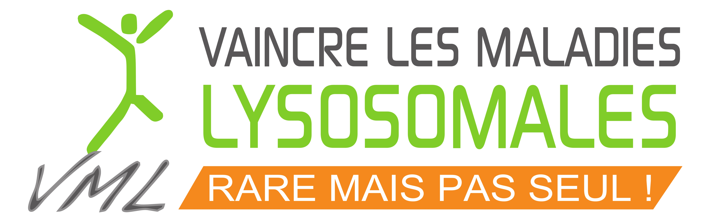

Les soutiens aux familles et patients atteints de CLN
Il existe dans la plupart des pays des associations plus ou moins informelles regoupant des familles de patients atteints par les CLN, qui travaillent souvent en lien avec les professionnels de santé de leurs pays.
En France
L'association Vaincre les Maladies Lysosomales
En France, Vaincre les Maladies Lysosomales est une association de parents et de malades déterminés à vaincre ces maladies et trouver des réponses pour mieux vivre au quotidien. Le mot d'ordre de l'association est rares, mais pas seuls.
Sous l’appellation de « maladies lysosomales » sont regroupées plus de 50 maladies handicapantes de l’enfant et de l’adulte dont le point commun est une déficience génétique induisant un défaut de fonctionnement au niveau du lysosome. Les CLN font partie des maladies lysosomales, et l'association VML regroupe ainsi plusieurs familles de patients atteints de CLN.
Parmi les activités de l'association, créée en 1990, on peut notamment citer le soutien à la recherche grâce à la collecte de financements (127 000 euros en 2016), l'accompagnement des patients grâce à des week-end et séjours de rencontre, le soutien aux familles avec de séjours de répit, ou encore la publication mensuelle d'une lettre d'information sur les maladies lysosomales.
Les personnes intéressées par les activités de cette association peuvent prendre contact avec l'équipe animatrice grâce au site internet, accessible à l'adresse http://vml-asso.org.
Le week-end annuel de rencontre des familles, qui se déroule chaque année en mai, est un moment fort de la vie de l'association.
Vous trouverez les comptes-rendus des deux précédentes rencontres sur ce site :
- week-end annuel de rencontre 2017, où il a notamment été question des nouvelles approches proposées par les services de soins palliatifs ;
- week-end annuel de rencontre 2018, où il a notamment été question des nouvelles techniques de séquençage, et des questions éthiques associées.
- week-end annuel de rencontre 2019, où il a notamment été question du financement des thérapies géniques.
Centres de référence
En France, la prise en charge médicale des maladies rares est confiée depuis le premier plan national sur les maladies rares (2005) à des centres de référence. On trouve plus d'information à ce sujet sur le site du gouvernement. Les CLN font partie des maladies héréditaires du métabolismes. Parmi les centres de références spécialisés dans l'accueil des patients atteints de ces maladies, on peut par exemple citer :
- Le centre de référence des maladies héréditaires du métabolisme à Marseille, coordonné par Brigitte Chabrol
- Le centre de Necker MaMEA à Paris, coordonné par Pascale de Lonlay
- Centre de référence lyonnais des maladies héréditaires du métabolisme à Lyon, coordonné notamment par Nathalie Guffon
- Le centre de référence des maladies héréditaires du métabolisme de l'hôpital Robert-Debré, à Paris
Ces centres de références sont également complétés par des centres de compétences régionaux ou inter-régionaux.
Équipes relais handicaps rares
Depuis 2015, les équipes relais handicaps rares (ÉRHR) se déploient pour couvrir le territoire national, avec des missions structurées autour de l'accompagnement du projet et du parcours de la personne en situation de handicap rare. Ils peuvent être sollicités par les professionnels concernés par les handicaps rares, mais aussi par les personnes en situation de handicap et leurs familles.
Ils proposent d'obtenir un soutien ou un accompagnement, notamment pour aider dans la cohérence d'un parcours de vie, en proposant des conseils techniques, des formations spécifiques, l'accès à un réseau, le partage de connaissances ou encore l'analyse d'expériences.
L'ÉRHR Auvergne Rhône-Alpes est la première équipe à proposer un centre de documentation très complet sur la question des handicaps rares. On peut consulter la liste de ses ressources sur le site internet Ressources doc, et emprunter gratuitement des livres (les frais de port étant à notre charge).
Établissements d'accueil
Il n'existe pas à ma connaissance d'établissement d'éducation spécialisé dans l'accueil des personnes CLN, comme peut l'être la Heather House au Royaume-Uni (voir plus bas). Cependant, certains centres spécialisés dans l'accueil des jeunes déficients visuels disposent de services accueillant des jeunes avec handicaps associés, et peuvent être des ressources intéressantes.
Au Royaume-Uni
Batten Disease Family Association

Au Royaume-Uni, la Batten Disease Family Association est une association fondée en 1997 qui réuni les parents de personnes atteintes de CLN. Cette association bénéficie d'un environnement facilitant, qui lui permet d'être à la pointe de l'information sur les maladies CLN. En particulier, elle bénéficie de la présence au sein de ses membres de professionnels de la santé et de la recherche, travaillant depuis plus de vingt ans sur la maladie de Batten. On peut par exemple citer :
- la chercheuse Sara Mole, considérée comme l'une des principales expertes internationales sur la maladie. Elle est à l'origine du projet BATCure.
- Dr Christine Caren, Sarah Kenrick, et l'équipe médicale de la Heather House, un établissement spécialisé dans l'accueil long terme de patients CLN3. On retrouve sur les pages de ce site les traductions de documents rédigés par Sarah Kenrick, qui abordent les thèmes de l'anxiété, des activités physiques, de l'épilepsie et du soutien postural.
- Laura Lee, infirmière spécialisée dans la maladie de Batten
- Barbara Cole, spécialisée dans l'éducation des jeunes atteints de la maladie de Batten
Ces expert·e·s participent chaque année à la conférence annuelle de l'association.
Vous trouverez les comptes-rendus des deux précédentes rencontres sur ce site :
- BDFA Family Conference 2016, avec un compte-rendu riche de beaucoup d'informations autour de la CLN3 ;
- BDFA Family Conference 2017, avec un compte-rendu abordant de nombreuses questions sur l'accompagnement des enfants atteints de CLN, toutes variantes confondues..
Les activités de l'association portent notamment sur la collecte de fonds pour le financement d'activités de recherche (650 000 livres en 2017), sur l'accompagnement des familles dans les démarches administratives et médicales (rendues complexes par le système de santé anglais), ou encore l'information au grand public. L'association propose notamment un classeur très complet pour chaque maladie, où sont proposées des fiches sur l'accompagnement médical, paramédical, sur l'éducation, mais aussi sur les mécanismes biologiques de la maladie.
Sara Mole et BATCure

Sara Mole est une chercheuse de UCL, l'une des universités de Londres. Elle travaille depuis plus de 20 ans sur la maladie de Batten. Elle est à l'origine du plus gros projet de recherche financé par un organisme public sur la maladie de Batten, le projet BATCure. Réunissant 17 partenaires à travers l'Europe, ce projet ERC H2020 est financé par l'Union Européenne, et focalise principalement son attention sur les variantes CLN3, CLN6 et CLN7 (voir sur la page consacrée aux effets les différentes variantes de la maladie).
Au fil des années, elle a formé de jeunes chercheurs à cette problématique, et construit un réseau de recherche à travers le monde, constituant à Londres l'un des centre d'expertise mondiaux sur la question.
Vous trouverez les comptes-rendus de la dernière rencontre internationale des chercheurs, organisée par Sara Mole : NCL 2018 London.
Heather House
La Heather House est un centre d'accueil pour personnes porteuses de CLN3, qui accueille notamment en pension les jeunes adultes porteurs de la maladie quand l'accueil à domicile devient complexe. L'expertise de ses professionnels de santé et d'accompagnement de vie est essentielle pour bien comprendre la progression de la maladie, les approches qui fonctionnent, ou celles qui ont pu être pratiquées par le passé et qui ont été écartées car non pertinentes.
Parmi les professionnels ayant une longue expérience dans cette structure, on peut notamment citer Dr Christine Caren, médecin généraliste du centre, ou encore Sarah Kenrick, qui a géré cet établissement pendant de nombreuses années. Leur passion à transmettre leur expertise sur la maladie de Batten lors des rencontres organisées par BDFA est une source inestimable d'informations.
Dans les autres pays du monde
L'association VML est membre du réseau MetabERN, qui regroupe de nombreuses associations de patients et centres d'expertise à travers l'Europe.
Il existe dans de nombreux autres pays des associations similaires. Leur activité dépend de beaucoup de choses : la culture du pays, plus ou moins favorable à ce type d'organisation, le fonctionnement des systèmes de santé, ou encore l'activité de recherche présente dans le pays sur ces maladies. Parmi les organisations et centres très actifs, on peut notamment citer :
- BDSRA aux États-Unis d'Amérique, qui a notamment beaucoup influencé la manière de fonctionner de BDFA.
- Batten disease center est un centre de recherche basé à l'Université de Rochester dans l'état de New-York, qui travaille notamment avec BDSRA.
- NCL Gruppe Deutschland e.V., une association de parents basée en Allemagne.
- L'hôpital de Hambourg dispose d'un centre d'expertise international sur les CLN, qui accueille certains patients européens n'ayant pas d'expertise pointue dans leur pays.
- En Turquie, une initiative récente a permis de fédérer plus de 50 patients CLN et leurs familles autour d'une association. Le groupe Facebook qu'ils partagent est notamment un lieu d'échange important.
Il existe également au niveau international un effort pour fédérer sous forme d'alliance les associations autour de la maladie de Batten. Leur page facebook (Batten Disease International Alliance) est une source d'information intéressante.
La Norvège, l'un des premiers pays où a été étudiée la maladie, est aussi un lieu de grande expertise sur la maladie, et notamment sur l'accompagnement des patients. L'association NSVF a très tôt regroupé les patients, et propose aujourd'hui aux familles une première rencontre dès l'annonce du diagnostic.
Sur internet
Il existe également des groupes de discussion autour de la maladie de Batten sur internet, notamment sur facebook. Certains de ces groupes sont liés aux associations précédemment nommées, d'autres sont indépendants. On peut par exemple citer :
- Les enfants de la céroïde lipofuscinose et accompagner un enfant atteint de CLN sont deux groupes fermés destiné aux parents d'enfants atteints de CLN.
- Batten Disease (BDSRA official group) est le groupe fermé de l'association BDSRA, qui accepte des membres même s'ils ne sont pas membres de l'association.